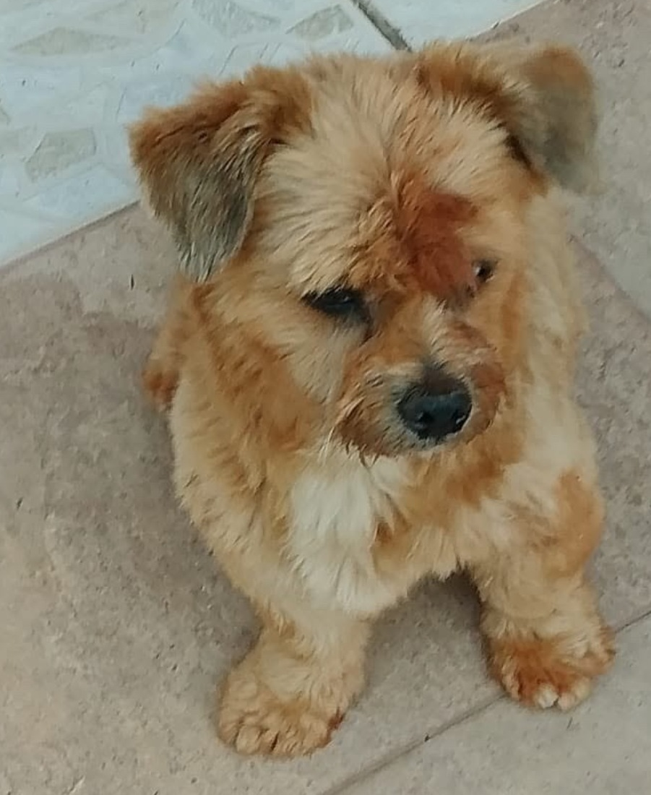
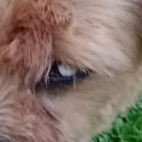

Cachorro encontrado

você me conhece?

olho branco
Ajude esse menino
a voltar pra casa.
a voltar pra casa.
Macho, com um olho branco.
Estava na Rua São João, perto da Escola Estadual Xavier, na Vila Luiza.
Estava na Rua São João, perto da Escola Estadual Xavier, na Vila Luiza.
É seu ou sabe de quem é? Chame no direct
@souazoe.pf